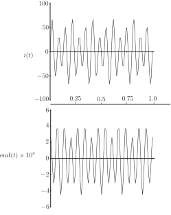

5 Engineering Example 2
5.1 Electromotive force
Introduction
Potential difference in an electrical circuit is produced by electromotive force (e.m.f.) which is measured in volts and describes the force that maintains current flow around a closed path. Every source of continuous electrical energy, including batteries, generators and thermocouples, consist essentially of an energy converter that produces an e.m.f. An electric current always produces a magnetic field. So the current which flows round any closed path produces a magnetic flux which passes through that path. Conversely, if another closed path, i.e. another coil, is placed within the first path, then the magnetic field due to the first circuit can induce an e.m.f. and hence a current in the second coil. The simplest closed path is a single loop. More commonly, helical coils, known as search coils, with known area and number of turns, are used. The induced e.m.f. depends upon the number of turns in the coil. The search coil is used with a fluxmeter to measure the change of flux linkage.
Problem in words
A current is travelling through a single turn loop of radius 1 m. A 4-turn search coil of effective area is placed inside the loop. The magnetic flux in weber (Wb) linking the search coil is given by:
where (m) is the radius of the current carrying loop, ( ) is the area of the search coil and is the permeability of free space, .
Find the e.m.f. (in volts) induced in the search coil, given by where is the number of turns in the search coil, and the current is given by
Mathematical statement of the problem
Substitute into and find when m, , and .
Mathematical analysis
Now, and
Interpretation
The induced e.m.f. is .
The graphs in Figure 8 show the initial current in the single loop and the e.m.f. induced in the search coil.
Figure 8

Note that the induced e.m.f. does not start at zero, which the initial current does, and has a different pattern of variation with time.
Exercises
- Calculate the derivative of when radians.
-
Calculate the rate of change of
when
- radians
-
Calculate the rate of change of
when
- radians
- radians
- 1.380
-
- 5.8989
-
- 5
- 4.4305